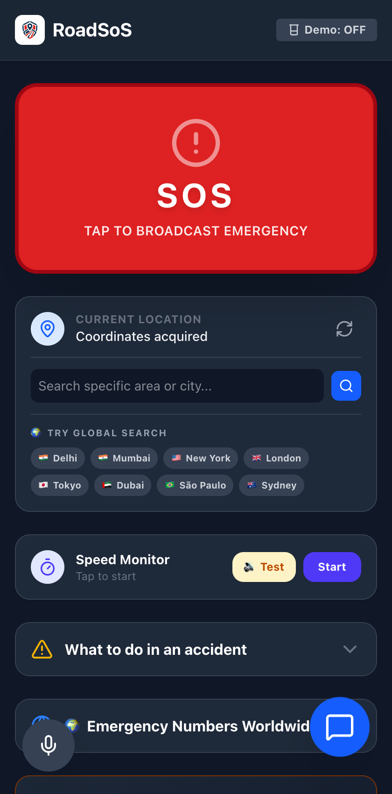
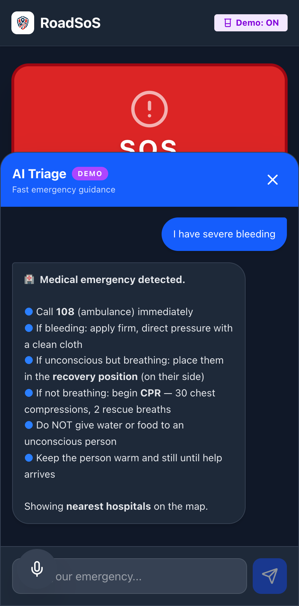

RoadSoS
The Ultimate Offline-First Emergency Network
Empowering Victims & Bystanders During the Critical Golden Hour
Hackathon Pitch Presentation
Team RoadSoS Innovators
Golden Hour Delays
Cost Lives on Highways.
When an accident happens, every second counts. However, immediate rescue attempts are crippled by two fatal barriers:
Cellular Dead Zones
Critical highway stretches often have zero network coverage. Traditional navigation, medical databases, and online maps completely fail when offline.
Victim Shock & Bystander Panic
Victims are physically incapacitated or in extreme shock. Bystanders struggle to find precise coordinates or recall proper emergency numbers.
Autonomous,
Offline-First Rescue.
RoadSoS is a Progressive Web App (PWA) designed to function perfectly with zero cellular signal, immediately bridging the gap to rescue services.

SOS Blackbox
& Safety Copilot.
Robust safety features designed for high-trauma and crash situations:
⚡ Proactive GPS Speed Guard
Tracks real-time speed. Flashes alert strobe and warning sound to prevent highway speed limits violations before crashes can happen.
High-decibel Web Audio locator alarm.
Local 15s ambient audio crash log.
Accelerometer shake emergency call trigger.

Resilient Technology Stack
1. CLIENT FRONTEND
React + Vite SPA
Tailwind CSS (UI)
Leaflet Map Engine
2. OFFLINE GUARD
PWA Service Worker
IndexedDB Local Cache
OSM Static Mapping
3. INTEGRATION APIS
Overpass Server API
Claude AI Engine
Web Hardware APIs
Scalable, Zero Cost, Lifesaving.
$0
Platform Fees
By utilizing OpenStreetMap Overpass servers instead of commercial Google Maps APIs, we scale globally with zero overhead costs.
100%
Cross-Border Reach
The database updates dynamically anywhere globally. Whether driving in India, Europe, or the USA, safety stays active.
Instant
Zero Bar Access
Bypassing installation hurdles (PWA format) enables quick deployment through SMS, QR codes, or emergency links.
Thank You!
Let's make our highways safer, together.
Try RoadSoS Now
Instant loading, zero install needed.
LIVE PROJECT URLgithub.com/TeamRoadSoS/app